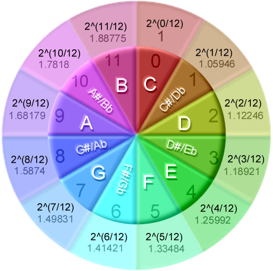
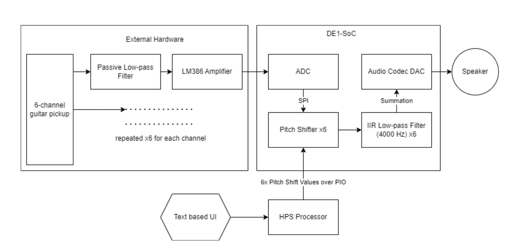
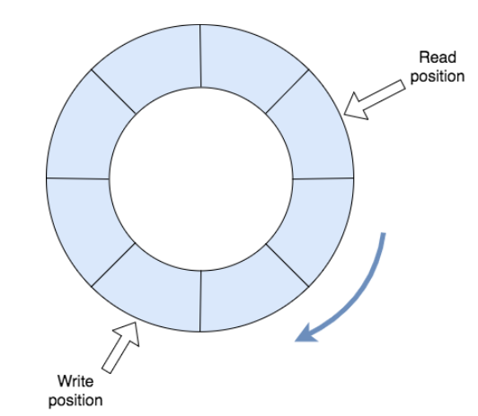
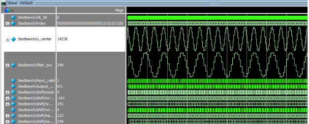
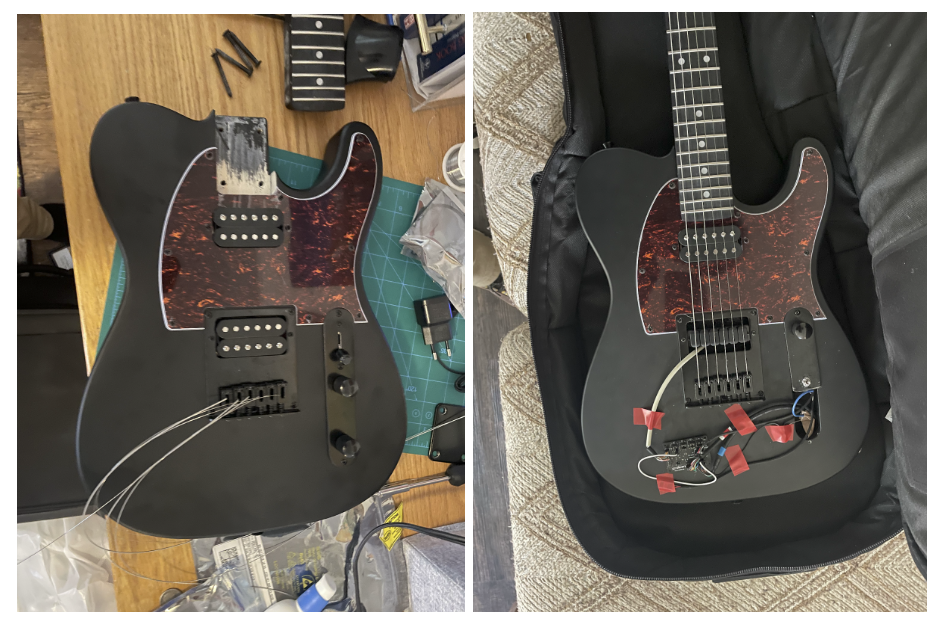
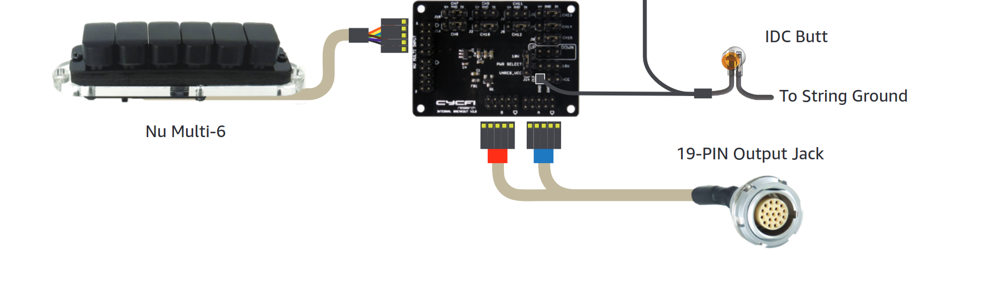
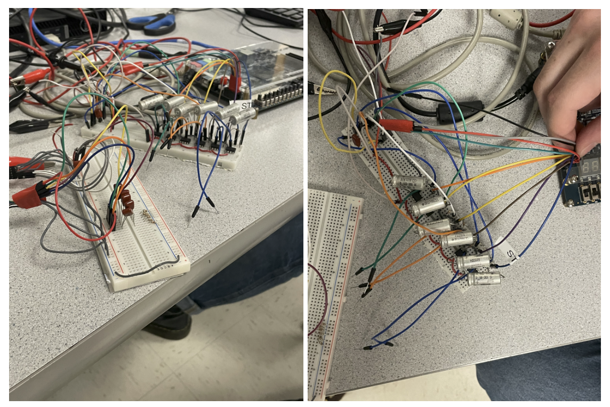
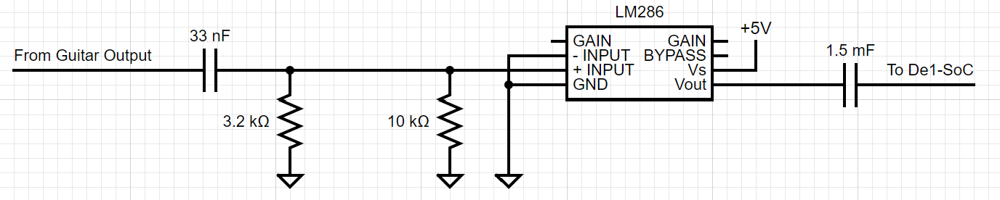

Introduction
Real-Time Polyphonic Pitch Shifter for Electric Guitar
TODO
Live Demo
Design and Implementation
High-Level Design
Rationale
This project is, at its core, a proof of concept for time-domain pitch shifting using an FPGA. There are guitar pedals that support pitch shifting, these are often fully analog and are done in the frequency domain as well. They can work well for pitch-shifting single notes or the entire guitar but do not often implement different pitch-shifting for each string individually. We take advantage of the parallelism possible on the FPGA to implement a different pitch shifter for each string. We use a hexaphonic pickup to give us 6 channels out of the guitar, one for each string. The ability to pitch shift each string individually would allow guitarists to easily experiment with alternative tunings. Alternative tunings are very popular in certain genres of music but can provide annoyance while practicing or performing, re-tuning a guitar is a precise and careful process. Pitch shifting each string with the range of up or down an octave would also allow for tunings of the guitar that are not physically possible with the strings given. You cannot tune your strings up an octave or they will snap, so alternative tunings have a certain range that they are allowed to be in. With this kind of pitch shifting you would no longer have to worry about the physical limitations of the string when playing with the sound of different guitar tunings.
Background Math
The pitch-shifting algorithm is implemented by sampling the same data in and reading data out at different frequencies. We decided to use a time-domain pitch shifter to avoid the need to do any Fourier transforms which can be expensive in both hardware consumption and time. The basic math of our pitch shifting is that if we read output data at some multiple of the input sampling rate, the frequency of our output data will also increase by that same multiple. This is a pretty simple concept, however, implementing it brings up a fundamental problem with pitch-shifting: if you output data faster than you receive input you will run out of data. Likewise, if you output data much slower than you input it, your output signal will fall far behind and no longer be real-time. Our solution to this problem will be discussed in the hardware implementation section of the report below.
The other background math that was important for our pitch shifting is the mathematics of Western music. All music is built on ratios of frequencies, the most basic ratio being a 2:1 ratio. This is the frequency ratio of an octave in music. To go from a middle C to a C one octave higher, you double the frequency. To go one octave lower you cut the frequency in half. Other notes and harmonies that sound "good" to our ears are also built upon these ratios. The frequency ratio of 3:2 is what we call a fifth in music theory, and the ratio of 5:4 is the major third. In Western music we have split the octave up into 12 notes to achieve most of these ratios Now, in almost all Western music we use tuning called 12-TET or 12-tone equal temperament. We want "equal" spacing between these 12 notes as we move up or down an octave, but because the octave is a ratio of 2:1 we do not want to space the frequencies of the notes out linearly, this does not give us a good estimate of the ratios we like to hear in music. Instead, each note is a factor of 2^(x/12) above the previous note in terms of frequency. This means that once we go up 12 notes our note is 1*2^(12/12) or 2 times the frequency of the original note. With 12-TET, we have chosen the 2:1 ratio of the octave as our basis and spaced out the notes evenly so that this ratio is maintained. The notes in between the octaves are also all very close approximations of the other ratios mentioned above and to an untrained ear will sound perfectly correct. The guitar is tuned in 12-TET and so our pitch shifter shifts pitches in 12-TET as well. We want to be able to shift the pitch of each string up or down any number of notes. To get the desired output frequency we must multiply our input frequency by 2^(n/12) where n is the number of notes we want to shift up or down. This scheme works with negative values of n for shifting notes downwards as well.

Visualization of the twelve-tone equal temperament system used in Western music [Source]
High-Level Structure
Due to the real-time nature of our application, our high-level structure can be easily shown in the data flow diagram below. The first step of the project is to get good data into the FPGA so that we can do our pitch shifting on clean data. To do this we can look at the external hardware section of the diagram below. Our guitar first has 6 output channels, each of which outputs a low voltage analog signal when each of the 6 strings is played. We built a passive RC low pass filter on each of these channels to help with some of the noise from the power supply the guitar was powered on. We then sent each channel through its own amplifier circuit to bring the voltage to the 0-4.96V range that our onboard ADC's take. The ADCs on the FPGA only have 12-bits of resolution so we wanted to ensure our input signal was at the right voltage to utilize the entire range of the ADC.
On the DE1-SoC board, there is a single 12-bit, 8-channel ADC, the LTC2308, that we controlled through the FPGA itself. The ADC takes analog inputs and gives a digital, SPI output to our FPGA. We used Altera IP to interface with the ADC. The Altera IP managed the SPI interfacing behind a hardware module that gave us six channels of digital output. These six channels were then sent to six unique pitch shifter instances. Each pitch shifter operated on a single channel and the pitch shift amount was set by the HPS on the DE1-SoC. There were six values coming from the HPS, one for each pitch shifter. Then each pitch-shifted signal was sent through one of six IIR active low-pass filters. These IIR low-pass filters were implemented with Bruce Land's IIR Butterworth filter implementation found on the course website. The purpose of these filters was to remove high-frequency discontinuities that were artifacts of the pitch shifters. We will talk about these artifacts in more detail in the implementation section. Finally, we added all of our signals together and used the DE1-SoC audio codec to send our now pitch-shifted and low-pass filtered signal through a DAC and then to the speaker output.
Doing all of the pitch-shifting and filtering in parallel in hardware gives us a large advantage over performing these operations in software. The software could not support 6 channels in parallel and we take advantage of the parallelism of the FPGA to run all 6 pitch shifters simultaneously.

A high-level diagram of the entire system
FPGA Hardware Design
Our hardware on the FPGA is the same datapath for each of the six channels. The first step of this was to interface with the onboard SPI ADC. Altera provided IP for this interface, so we did not have to deal directly with SPI. We specified the desired SPI clock rate and the number of ADC channels we wanted to use. While some of the details of how the Altera IP worked were obscured and difficult to figure out, we ended up choosing a serial clock rate that gave us a sampling rate of about 16kHz on each channel. This is not incredibly high-quality audio, but is acceptable given the limitations of the ADC. This ADC was not designed specifically for audio, but it was the most effective way to sample 6 channels at once. The audio ADC on the DE1-SoC only had two channels. Out of the Altera IP for the ADC control, we got 6 channels that changed at a rate of 16kHz. For each of these channels, we set a valid bit for a single clock cycle of our 50 MHz clock the FPGA was running on, this told the pitch shifter that a new input was valid.
Our pitch shifter is the core of the hardware we wrote during this project. The pitch shifter implements a very simple state machine, it will wait until the input is valid, run a single step of computation, and then wait again until it sees another valid input signal. It also raises a flag for a valid output for a single cycle. This interface allows us to synchronize the pitch shifter with the ADC inputs and allows the IIR filter after the pitch shifter to synchronize with the pitch shifter itself.

A basic ring buffer for reference
Pitch Shifter
The pitch shifter is implemented using a ring buffer using M10k memory blocks. Each pitch shifter has an M10k memory block with 1024 entries, we chose 1024 as it gave us the best audio quality. Our ring buffer was implemented as a 10-bit write address into the M10k memory blocks. Each time we get a valid audio sample we write to the current memory address and increment the write address by one. When the write address was 1023 and we incremented by one, the overflow would reset the address to zero again, in this way our block of memory was a "ring". The write pointer in our ring buffer was very simple, but incrementing the read pointer was a more complex problem. When we looked at the mathematics earlier, we saw that if we simply increased the read frequency by double the write frequency, we would double the octave, or shift the pitch up by 12. Similarly, if we halved the read frequency we would halve the octave of whatever pitch was being written into the buffer. It was an easy solution to increase the read pointer by two for every time we increased the write pointer by one, however, then we were limited to only doubling the frequency. To get around this, we made the read address a fixed point, fractional number. We used 10.22 fixed-point to keep a 32-bit number with high resolution. Our read address could now increase by a fractional amount each time, and the 10 integer bits would be used as the address. Now we could use the fractional 2^(n/12) values to increment the read address each time. A twelfth root operation is a lot of hardware effort to compute, so we put all of the 2^(n/12) values in a lookup table for n ranging from -12 to 12. These values were precomputed and also stored in 10.22 fixed-point. Now, we could specify the number n pitches we wanted to shift by and get a dynamic corresponding read increment value based on the input n. Incrementing our read pointer by the desired value for each sample while the write pointer incremented at a constant rate allowed us to change the pitch dynamically.
A problem with this method is that when shifting the pitch up or down the read pointer will either pass or be passed by the write pointer, respectively. This creates a discontinuity in the data and will be heard as a click or pop in the audio output. This discontinuity is inevitable in time domain pitch shifting. To solve this problem we added another read pointer offset from the first read pointer. We chose to offset this read pointer by 512 and increment it by the same value as the other read pointer. We then took the value at both read pointers and added them together to get our final output. This method meant that whenever there was a discontinuity at one read pointer, the other read pointer was offset by 512 addresses and was definitely not at a discontinuity. While this helped eliminate some of the artifacting caused by the discontinuities, it was not perfect, there were still some audible artifacts, but the sound was much better.
A more thorough approach to this would be to have some kind of intelligent crossfading function between the read pointers. We could choose to take the read pointer that was furthest away from the write pointer at first, and as the distance between one read pointer and the write pointer changed we could fade out to using the other read pointer. The "volume" of one read pointer could be a function of how far away it was from the write pointer. You would still need to be cautious about discontinuities in the transition between pointers, but this kind of algorithm could result in a better sound. We did not however implement this.

First attempt at basic pitch shifting with a buffer
Post-Pitch-Shifted Datapath
After the data was pitch-shifted, we still had some high-frequency noise due to the discontinuities discussed above. Here we used Bruce Land's IIR filter from the course webpage to get a cleaner sound. We sign-extended our pitch-shifted output to 16 bits instead of 12 so that it was the right size for the filter, and then indicated the signal was valid with the pitch-shifter output-valid signal. This helped our audio quality significantly. The IIR filter was not a single cycle, however, our 50 MHz clock was much faster than our 16 kHz sampling rate, so it had plenty of time to finish and provide a valid audio output. We chose hard-coded coefficients to implement a low pass IIR filter with a cutoff of 4000 Hz so that there was plenty of room for the notes of our guitar to sound and not be cut off, while still eliminating the very high-frequency discontinuities from the pitch shifter. Finally, we added all 6 channels together to get a single audio output and used the DE1-SoC audio codec to send audio output to the speaker.
External Hardware Design

The guitar before (left) and after modification (right)
The hexaphonic guitar was built by using a standard six-string guitar (Harley Benton TE-20HH SBK) as a base and replacing the base electronics (the bridge pickup and control panel specifically). The critical modification made was replacing the bridge pickup, a standard "humbucker," with the hexaphonic "Nu Multi 6" from Cycfi Research. The standard control panel (a three-way switch for pickup selection, and two potentiometers for volume and tone control) was also replaced with digital control voltage equivalents from Cycfi. The standard 1/4" instrument jack was also replaced with a 19-pin LEMO connector.

Modified guitar components
Our project also involves a circuit that is necessary to process the analog outputs from the guitar before sending it through the DE1-SoC. The circuit involves two sections: a low pass filter and a signal amplifier. We quickly found out that our signals were incredibly noisy, so much so that you could barely discern the actual guitar waveform from the noise. To try to mitigate this issue, we created a simple low pass filter with a cutoff frequency of 1.5kHz composed of a capacitor and resistor. This way we can accept the frequency range of the guitar and reject the high frequency noise that we were encountering. The second part of our circuit is the amplifier. The analog signals coming from the guitar are not within the optimal range for the ADC in the DE1-SoC, so we had to amplify them and apply a DC offset. We did this by using an LM386 Low Voltage Audio Power Amplifier. We also added a capacitor between the op-amp’s output and DE1-SoC’s input and a resistor between the op-amp’s input and ground. We did this as another method to potentially reduce the noise that we were experiencing. However, even with these hardware fixes, we could not identify, nor eliminate, the high-frequency noise we were experiencing.

The offset and amplifier circuit with filters

Diagram of circuit with values
Software Design
The only functionality that the HPS was responsible for was to serve as a user interface (UI) to control the pitch channels for each string on the guitar. We utilized pthreads to be able to read inputs through the terminal provided by the user and process and write the inputs to respective memory-mapped addresses. We utilized 12 PIOs: one for pitch shift magnitude and another for pitch shift direction for each of the six guitar channels. The HPS UI asks the user for the number corresponding to the guitar string, pitch shift direction (up or down), and the magnitude of the pitch shift. The UI is designed such that the pitch can only be shifted up or down a full octave which is denoted by a shift input of 12.
Results
text
Conclusion
text
Appendix
- The group approves this report for inclusion on the course website.
- The group approves the video for inclusion on the course youtube channel.
References
- LM386 Low Voltage Audio Power Amplifier
- Cycfi Research "Nu" Guitar Pickups
- Cycfi Research "Meredith" Reference Setup